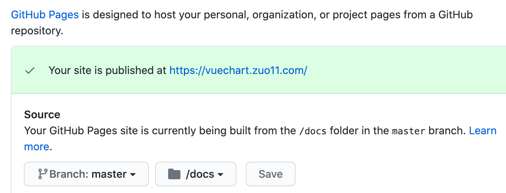
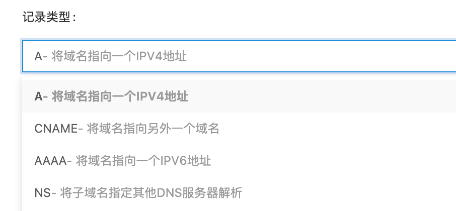
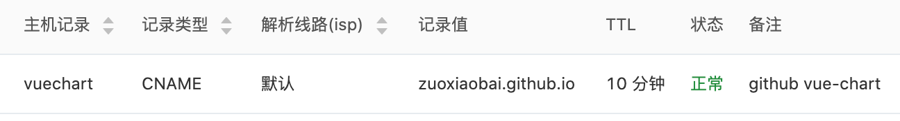

GitHub Pages使用自定义域名开启HTTPS，配置CNAME解析
这篇文章发布于 2020/12/07，归类于 运维部署与版本控制
标签：
github pages https
一般在仓库的 Setting 中，开启 Github Pages 会生成一个 xxx.github.io/xx/ 的地址，地址有点长，我们可以使用自定义域名，这里我将 vue-chart 这个仓库设置成了自定义域名 vuechart.zuo11.com。然后，我们需要把自定义的域名解析到 github.com 地址。可以使用 ping github.com 来获取它的服务器 IP。

获取 IP 后，我们到域名管理的位置，设置解析。
- 记录类型，就是域名的解析类型，最常见的是
A类型，就是将域名解析到服务器 IP。CNAME是将域名指向另一个域名 - 主机记录，就是域名前缀，
@表示 xx.com，www表示www.xx.com，一般设置这两种。mail表示 mail.xx.com，代表二级域名。

解析到 github IP 后，可以正常用域名访问到。但开启 https 后，证书有问题。这时提示需要配置 CNAME 解析。于是就把 'A' 类型的解析改成 了 CNAME。将 zuo11.com 的二级域名 vuechart 解析到 zuoxiaobia.github.io，这样就可以使用 https 访问了，而且证书正常。
